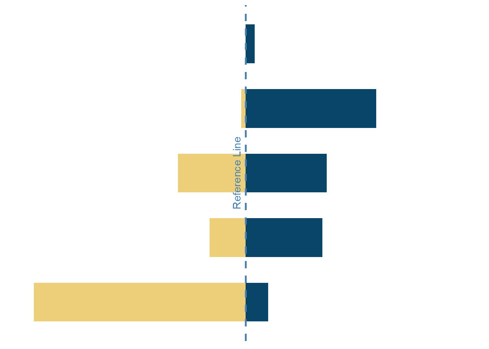

library(tidyverse) # untuk manupulasi, merapikan, & visualisasi data
library(gapminder) # untuk mengakses gapminder dataset
library(geomtextpath) # untuk membuat Line Textspine_df <- gapminder %>%
filter(year == 2007) %>%
mutate(median_lifeExp = median(lifeExp)) %>%
group_by(continent) %>%
summarize(below_med = sum(lifeExp < median_lifeExp),
beyond_med = sum(lifeExp >= median_lifeExp)) %>%
pivot_longer(!continent,
names_to = 'cluster',
values_to = 'percent_country') %>%
mutate(percent_country = if_else(cluster == 'below_med',
-percent_country,
percent_country))spine <- spine_df %>%
ggplot(aes(x = percent_country,
y = continent,
fill = cluster)) +
geom_col(width = .6,
fill = if_else(spine_df$percent_country > 0,
'#094568',
'#edce79')) +
geom_textvline(xintercept = 0,
label = 'Reference Line',
vjust = -0.5,
hjust = .5,
linewidth = 1,
linecolor = '#4682B4',
linetype = 2,
color = '#4682B4') +
scale_x_continuous(limits = c(-48, 48)) +
theme_minimal() +
theme(
axis.title = element_blank(),
axis.text = element_blank(),
axis.line = element_blank(),
panel.grid.major = element_blank(),
panel.grid.minor = element_blank(),
panel.background = element_rect(fill = '#FFFFFF',
color = NA),
plot.background = element_rect(fill = '#FFFFFF',
color = '#FFFFFF')
)